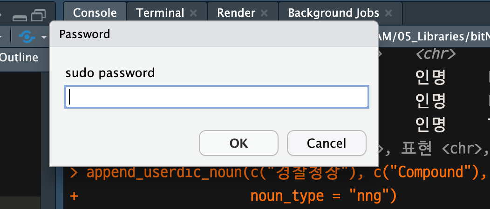
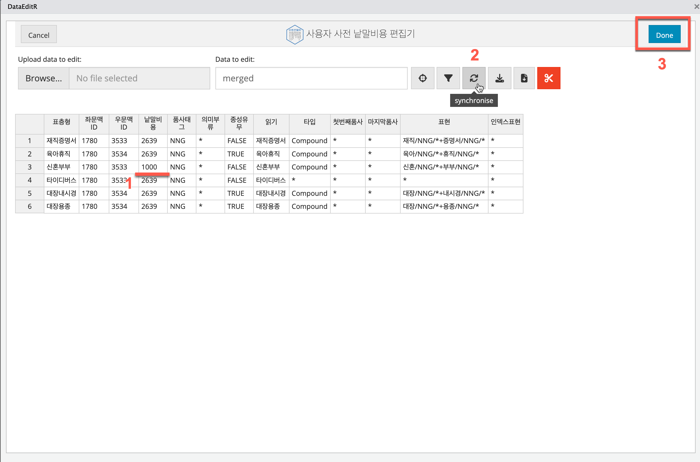

Manage Dictionary
manage_dic.Rmd형태소 사전 관리
bitNLP는 은전한닢 형태소분석기를 이용하여 형태소 분석을
수행합니다. 이 과정에서 품사 태깅(토크나이징) 결과가 분석가가
의도하는대로 이뤄지지 않을 수 있습니다. 여기서는 형태소 사전 관리를
통해서 사용자가 의도하는대로 분석이 수행되는 것을 유도하는 방법을
다룹니다.
bitNLP의 형태소 관리 기능
형태소 사전 관리는 일반적으로 다음 표의 프로세스 순으로 진행합니다.
| 프로세스 | 기능 | 지원 함수 | 시스템 사전 | 사용자 사전 |
|---|---|---|---|---|
| 토크나이저 플랜 조회 | 낱말비용 기반의 토크나이저 플랜 조회 |
|
공통 | 공통 |
| 기 정의 사전조회 | 사전 정의 파일의 내용을 조회 |
|
userdic_path 인수에 시스템 사전정의 파일 경로 지정 | userdic_path 인수에 사용자 사전정의 파일 경로 지정 |
| 사전 정의 파일에 낱말 추가 | 사전 정의 파일에 등록할 낱말 추가 |
|
userdic_path 인수에 시스템 사전정의 파일 경로 지정 | userdic_path 인수에 사용자 사전정의 파일 경로 지정 |
| 사전 컴파일 | 사전 정의 파일 정보에 인텍스 정보 삽입 |
|
add_sysdic() 사용 | create_userdic() 사용 |
| 사전 설치 | 사전 정의 파일로 사전 생성 |
|
add_sysdic() 사용 | create_userdic() 사용 |
| 사전 활용(형태소분석) | 사전을 이용한 형태소 토크나이징 |
|
기본설정 | user_dic 인수 사용 |
| 낱말비용 수정 | 사전 정의 파일의 낱말비용 수정 |
|
미지원 | shiny 앱 호출 |
| 낱말비용 수정 사전생성 | 낱말비용 수정 사용자 사전 갱신/생성 |
|
미지원 |
낱말비용 기반의 토크나이저 플랜 조회
형태소 분석기가 문장을 품사로 토크나이징할 때에는 낱말비용의 크기로 코크나이징합니다. 만약에 문장이 의도하지 않는 결과로 토크나이징된다면 낱말비용 기반의 토크나이저 플랜을 조회합니다.
토크나이저 플랜을 조회하는 이유는 이미 해당 토큰(낱말)이 사전에 등록되어 있으나, 비용이 커서 의도하지 않는 결과가 나타날 수 있기 때문입니다. 이 경우에는 사전에 등록하는 것보다는 낱말비용을 수정하는 방법으로 원하는 결과의 도출을 유도해야 합니다.
형태소 분석
“윤희근은 경찰청장이다.”라는 문장에 대해서,
morpho_mecab() 함수를 이용해서 형태소 단위로
토큰화합니다.
> doc <- "윤희근은 경찰청장이다."
> morpho_mecab(doc, type = "morphe")
NNP NNG JX NNG NNG VCP EF SF
"윤희" "근" "은" "경찰" "청장" "이" "다" "." 윤희근이라는 인명과 경찰청장이라는
일반명사가 토큰화되지 못했습니다. 신규 임명된 정부 및 공공기관의
기관장이나 새로 떠오르는 학계/예체능계 스타 이름은 시스템 사전에 없을
가능성이 있습니다.
이제 우리는 잘못된 토큰화를 바로잡는 과정을 진행할 것입니다.
get_plan_cost()
get_plan_cost()는 낱말비용 기반의 토크나이저 플랜을
조회합니다.
get_plan_cost(x, topn = 3, dic_path = NULL)다음과 같은 인수를 사용합니다.
- x: 플랜을 조회할 낱말이나 문장.
- topn: 플랜을 조회한 후 표시할 상위 저비용 플랜 개수.
- 기본값은 3임.
- 플랜의 개수가 topn보다 작다면, topn 만큼 반복 출력됨
- dic_path: mecab-ko-dic 사전이 설치된 경로.
- 지정하지 않으면, bitNLP가 설치한 사전 경로를 사용
“윤희근은 경찰청장이다.”라는 문장에 대해서 낱말비용 기반의 토크나이저
플랜 상위 2개를 조회합니다. 결과를 보면 윤희근이라는 인명과
경찰청장이라는 일반명사가 어떤 순위로 토큰화되는 지 알 수
있습니다.
> get_plan_cost(doc, topn = 2)
# A tibble: 16 × 9
우선순위 표층형 품사태그 의미부류 좌문맥ID 우문맥ID 낱말비용 연접비용 누적비용
<int> <chr> <chr> <chr> <int> <int> <int> <int> <int>
1 1 윤희 NNP "인명" 1788 3549 5483 -2347 3136
2 1 근 NNG "" 1780 3534 4535 -17 7654
3 1 은 JX "" 682 2377 349 -2614 5389
4 1 경찰 NNG "" 1780 3534 2371 826 8586
5 1 청장 NNG "" 1780 3534 2084 269 10939
6 1 이 VCP "" 2239 3575 1201 -1615 10525
7 1 다 EF "" 3 5 2700 -3228 9997
8 1 . SF "" 1794 3560 3518 -1948 11567
9 2 윤희 NNP "인명" 1788 3549 5483 -2347 3136
10 2 근 NNG "" 1780 3534 4535 -17 7654
11 2 은 JX "" 682 2377 349 -2614 5389
12 2 경찰청 NNG "" 1780 3534 1896 826 8111
13 2 장 NNG "" 1780 3534 3899 269 12279
14 2 이 VCP "" 2239 3575 1201 -2955 10525
15 2 다 EF "" 3 5 2700 -3228 9997
16 2 . SF "" 1794 3560 3518 -1948 11567토크나이저 플랜이 2개 중에서 상위 1번째 플랜은 다음과 같습니다. 이 결과는 morpho_mecab()의 결과와 동일합니다.
- 윤희\NNP+근\NNG+은\JX+경찰\NNG+청장\NNG+이\VCP+다\EF+.\SF
그런데 우리가 기대한 플랜은 다음과 같습니다.
- 윤희근\NNP+은\JX+경찰청장\NNG+이\VCP+다\EF+.\SF
사용자 사전 정보 생성
사용자 정의 사전에 추가할 낱말들은 대부분 NNG(일반명사), NNP(고유명사)일 것입니다. 일반명사는 대부분 복합명사일 것이고 고유명사는 인명, 지명 등이 대부분일 것입니다.
bitNLP는 mecab-ko-dic 사전에 명사를
추가하는 기능을 제공합니다.
“윤희근은 경찰청장이다.”라는 문장을 “윤희근\NNP+은\JX+경찰청장\NNG+이\VCP+다\EF+.\SF”로 토큰화하기 위해서 우리는 다음의 사전을 추가해야 합니다.
- 인명으로서의 고유명사
- 윤희근
- 복합명사로서의 일반명사
- 경찰청장
get_userdic_meta()
get_userdic_meta()는 사용자 사전정의 디렉토리의 사전파일
읽어, 정의된 내용을 tibble 객체로 반환합니다. 이 기능을
통해서 사용자 명사 사전의 등록(정의) 여부를 파악할 수 있습니다. 다음과
같은 명사 사용자 정의 사전 파일을 참조합니다.
- 인명사전 : person.csv
- 지명사전 : place.csv
- 고유명사사전 : nnp.csv
- 일반명사사전 : nng.csv
get_userdic_meta(
noun_type = c("person", "place", "nnp", "nng"),
userdic_path = NULL
)다음과 같은 인수를 사용합니다.
- noun_type: 인명사전, 지명사전, 고유명사 사전, 일반명사 사전에서
조회할 사용자 정의 명사 사전 선택하며
- 기본값은 “person”로 인명사전을 지정합니다.
- userdic_path: 사용자 정의 명사 사전 파일이 존재하는 경로입니다.
- 지정하지 않으면 사전이 설치된 기본 경로에서 파일을 읽어옵니다.
인명과 일반명사를 등록해야하기 때문에 두 사전 파일에 기술된 정보를 조회합니다. 사용자의 사전 정의 파일의 내용에 따라 다른 결과가 나올 수 있습니다.
인명 사전 정의 파일의 내용은 다음과 같이 조회됩니다.
> get_userdic_meta("person")
# A tibble: 2 × 13
표층형 미지정1 미지정2 미지정3 품사태그 의미부류 종성유무 읽기 타입 첫번째품사 마지막품사
<chr> <lgl> <lgl> <lgl> <chr> <chr> <lgl> <chr> <chr> <chr> <chr>
1 까비 NA NA NA NNP 인명 FALSE 까비 * * *
2 변학도 NA NA NA NNP 인명 FALSE 변학도 * * *
# ℹ 2 more variables: 표현 <chr>, 인텍스표현 <chr>일반명사 사전 정의 파일의 내용은 다음과 같이 조회됩니다.
> get_userdic_meta("nng")
# A tibble: 4 × 13
표층형 미지정1 미지정2 미지정3 품사태그 의미부류 종성유무 읽기 타입 첫번째품사 마지막품사 표현 인텍스표현
<chr> <lgl> <lgl> <lgl> <chr> <chr> <lgl> <chr> <chr> <chr> <chr> <chr> <chr>
1 재직증명서 NA NA NA NNG * FALSE 재직증명서 Compound * * 재직/NNG/*+증명서/NNG/* *
2 육아휴직 NA NA NA NNG * TRUE 육아휴직 Compound * * 육아/NNG/*+휴직/NNG/* *
3 신혼부부 NA NA NA NNG * FALSE 신혼부부 Compound * * 신혼/NNG/*+부부/NNG/* *
4 타이디버스 NA NA NA NNG * FALSE 타이디버스 * * * * * 조회된 tibble 객체에서 변수는 다음과 같습니다.:
- 표층형: 낱말명.
- 미지정1: 사용하지 않는 컬럼.
- 미지정2: 사용하지 않는 컬럼.
- 미지정3: 사용하지 않는 컬럼.
- 품사태그: 인명의 품사. NNP를 사용함.
- 의미부류: 인명, 혹은 지명과 같은 의미 부류.
- 종성유무: 낱말의 마지막 음절의 종성 여부. T, F 입력.
- 읽기: 읽어서 소리나는 말.
- 타입: inflected, compound, Preanalysis, *.
- 첫번째 품사: 기분석으로 나눠지는 토큰에 대한 각 품사 입력.
- 마지막 품사: 기분석으로 나눠지는 토큰에 대한 각 품사 입력.
- 표현: 낱말이 토큰들로 나눠질 경우의 원형을 +로 묶어 입력
- 인텍스표현: 사용하지 않는 컬럼, *로 표현
append_userdic_meta()
사전 파일을 조회해서 등록하려하는 낱말이 없는 것을 확인했으면, 사전 파일에 등록할 낱말을 추가해야 합니다.
append_userdic_meta()는 사전에 등록하기 위해
인명/지명/고유명사/일반명사를 mecab-ko-dic의 사용자 사전
디렉토리에 사용자 정의 사전 파일에 추가합니다.
append_userdic_meta(
x,
type = NULL,
prototype = NULL,
noun_type = c("person", "place", "nnp", "nng"),
userdic_path = NULL
)다음과 같은 인수를 사용합니다.
- x: mecab-ko 사전에 등록할 이름들.
- mecab-ko-dic 품사 태그 설명에서 ‘표층형’, ’읽기’에 적용됨
- type: mecab-ko 사전에 등록할 타입들.
- mecab-ko-dic 품사 태그 설명에서 ’타입’에 적용됨
- prototype: mecab-ko 사전에 등록할 원형들.
- mecab-ko-dic 품사 태그 설명에서 ’표현’에 적용됨
- noun_type: 인명사전과 지명사전, 고유명사, 일반명사 사전에서 등록할
사용자 정의 명사 사전 선택.
- 인명과 지명도 고유명사이지만 별도로 구분하여 등록함
- userdic_path: 사용자 정의 명사 사전 파일이 존재하는 경로.
- 지정하지 않으면 사전이 설치된 기본 경로에서 파일을 읽어온다
인명사전에 “윤희근”이라는 고유명사를 추가합니다.
> append_userdic_meta(c("윤희근"), noun_type = "person")
── 사전 파일에 인명 추가하기 ─────────────────────────────────────────────────────
✔ 신규 추가 건수: 1
✔ 최종 인명 건수: 3
> get_userdic_meta("person")
# A tibble: 3 × 13
표층형 미지정1 미지정2 미지정3 품사태그 의미부류 종성유무 읽기 타입 첫번째품사
<chr> <lgl> <lgl> <lgl> <chr> <chr> <lgl> <chr> <chr> <chr>
1 까비 NA NA NA NNP 인명 FALSE 까비 * *
2 변학도 NA NA NA NNP 인명 FALSE 변학… * *
3 윤희근 NA NA NA NNP 인명 TRUE 윤희… * *
# ℹ 3 more variables: 마지막품사 <chr>, 표현 <chr>, 인텍스표현 <chr>마찬가지로 “경찰청장”이라는 복합명사도 추가합니다.
사용자 사전 생성
생성한 사용자 사전 정보로 사전을 생성하는 방법에는 다음과 같은 두가지가 있습니다.
- 시스템 사전에 추가
- 관리자 권한으로
mecab-ko-dic시스템 사전에 추가 - 명확하고 변하지 않는 여러 낱말을 일괄적으로 적용할 때 유리
-
add_sysdic()함수 이용
- 관리자 권한으로
- 사용자 사전 생성
- 별도의
mecab-ko-dic사전 생성 - 특정 도메인인 국한된 낱말이거나 일시적인 작업에만 사용할 때 유리
- 시스템 사전 변경의 권한이 없을 경우 사용자 사전 생성
-
create_userdic()함수 이용
- 별도의
사전 업데이트가 빈번하지 않거나 분석 속도를 낮추고 싶지 않은 경우 직접 시스템 사전을 변경하는 것이 좋습니다. 사전 업데이트가 자주 발생하거나 시스템 사전을 변경할 권한이 없으면 사용자 사전을 만드는 것이 좋습니다.
시스템 사전 추가
add_sysdic()
add_sysdic() 함수는 사용자가 정의한 사용자 정의 사전
파일을 mecab-ko-dic 사전에 추가합니다. 이 작업이 수행되야
비로소 형태소분석에 사용자가 추가한 사전이 반영됩니다.
이 함수는 인수가 없습니다.
인명과 복합명사를 사전에 적용합니다. 사전 파일을 사전에 적용하기 위해서는 시스템 관리자 권한이 필요합니다. MacOS나 Linux의 RStudio에서는 다음과 같은 sudo 패스워드를 묻는 다이얼로그가 나타나며, 패스워드를 입력해야 작업이 수행됩니다.

패스워드 입력을 정상적으로 마치면 사전을 추가합니다.
> add_sysdic()
Password:generating userdic...
nng.csv
/usr/local/install_resources/mecab-ko-dic-2.1.1-20180720/tools/../model.def is not a binary model. reopen it as text mode...
reading /usr/local/install_resources/mecab-ko-dic-2.1.1-20180720/tools/../user-dic/nng.csv ...
done!
nnp.csv
/usr/local/install_resources/mecab-ko-dic-2.1.1-20180720/tools/../model.def is not a binary model. reopen it as text mode...
reading /usr/local/install_resources/mecab-ko-dic-2.1.1-20180720/tools/../user-dic/nnp.csv ...
done!
person.csv
/usr/local/install_resources/mecab-ko-dic-2.1.1-20180720/tools/../model.def is not a binary model. reopen it as text mode...
reading /usr/local/install_resources/mecab-ko-dic-2.1.1-20180720/tools/../user-dic/person.csv ...
done!
place.csv
/usr/local/install_resources/mecab-ko-dic-2.1.1-20180720/tools/../model.def is not a binary model. reopen it as text mode...
reading /usr/local/install_resources/mecab-ko-dic-2.1.1-20180720/tools/../user-dic/place.csv ...
done!
test -z "model.bin matrix.bin char.bin sys.dic unk.dic" || rm -f model.bin matrix.bin char.bin sys.dic unk.dic
/usr/local/libexec/mecab/mecab-dict-index -d . -o . -f UTF-8 -t UTF-8
reading ./unk.def ... 13
emitting double-array: 100% |###########################################|
reading ./Foreign.csv ... 11690
reading ./NNB.csv ... 140
reading ./Symbol.csv ... 16
reading ./MM.csv ... 453
reading ./user-person.csv ... 3
reading ./Preanalysis.csv ... 5
reading ./NorthKorea.csv ... 3
reading ./XPN.csv ... 83
reading ./NR.csv ... 482
reading ./NP.csv ... 342
reading ./VA.csv ... 2360
reading ./VV.csv ... 7331
reading ./XSV.csv ... 23
reading ./XSA.csv ... 19
reading ./user-nng.csv ... 5
reading ./NNG.csv ... 208524
reading ./NNP.csv ... 2371
reading ./user-nnp.csv ... 4
reading ./EF.csv ... 1820
reading ./EP.csv ... 51
reading ./user-place.csv ... 3
reading ./VCP.csv ... 9
reading ./IC.csv ... 1305
reading ./MAJ.csv ... 240
reading ./Place-address.csv ... 19301
reading ./EC.csv ... 2547
reading ./NNBC.csv ... 677
reading ./ETM.csv ... 133
reading ./Person-actor.csv ... 99230
reading ./MAG.csv ... 14242
reading ./VCN.csv ... 7
reading ./Wikipedia.csv ... 36762
reading ./ETN.csv ... 14
reading ./Person.csv ... 196459
reading ./Hanja.csv ... 125750
reading ./Place-station.csv ... 1145
reading ./Place.csv ... 30303
reading ./Inflect.csv ... 44820
reading ./J.csv ... 416
reading ./XR.csv ... 3637
reading ./XSN.csv ... 124
reading ./VX.csv ... 125
reading ./CoinedWord.csv ... 148
reading ./Group.csv ... 3176
emitting double-array: 100% |###########################################|
reading ./matrix.def ... 3822x2693
emitting matrix : 100% |###########################################|
done!
echo To enable dictionary, rewrite /usr/local/etc/mecabrc as \"dicdir = /usr/local/lib/mecab/dic/mecab-ko-dic\"
To enable dictionary, rewrite /usr/local/etc/mecabrc as "dicdir = /usr/local/lib/mecab/dic/mecab-ko-dic"
make[1]: Nothing to be done for `install-exec-am'.
./install-sh -c -d '/usr/local/lib/mecab/dic/mecab-ko-dic'
/usr/bin/install -c -m 644 model.bin matrix.bin char.bin sys.dic unk.dic left-id.def right-id.def rewrite.def pos-id.def dicrc '/usr/local/lib/mecab/dic/mecab-ko-dic'
> 사전 등록 결과 확인
사용자가 정의한 사전이 정상적으로 등록되었으니 결과를 확인합니다.
먼저 낱말비용 기반의 토크나이저 플랜을 조회합니다. 원하는 플랜이 우선순위 1로 나타났습니다.
> get_plan_cost(doc, topn = 2)
# A tibble: 13 × 9
우선순위 표층형 품사태그 의미부류 좌문맥ID 우문맥ID 낱말비용 연접비용 누적비용
<int> <chr> <chr> <chr> <int> <int> <int> <int> <int>
1 1 윤희근 NNP "인명" 1788 3550 5472 -2347 3125
2 1 은 JX "" 682 2377 349 -2579 895
3 1 경찰청장 NNG "" 1780 3534 2639 826 4360
4 1 이 VCP "" 2239 3575 1201 -1615 3946
5 1 다 EF "" 3 5 2700 -3228 3418
6 1 . SF "" 1794 3560 3518 -1948 4988
7 2 윤희근 NNP "인명" 1788 3550 5472 -2347 3125
8 2 은 JX "" 682 2377 349 -2579 895
9 2 경찰 NNG "" 1780 3534 2371 826 4092
10 2 청장 NNG "" 1780 3534 2084 269 6445
11 2 이 VCP "" 2239 3575 1201 -3700 3946
12 2 다 EF "" 3 5 2700 -3228 3418
13 2 . SF "" 1794 3560 3518 -1948 4988당연히 형태소 토큰화 결과도 플랜이 우선순위 1번의 것과 동일합니다.
사용자 사전 생성
앞의 두 낱말이 시스템 사전에 추가되었으므로, 이제는 다른 낱말로 사용자 사전을 생성해 봅니다.
> doc <- "대장내시경 검사에서 대장용종을 제거했다."
> morpho_mecab(doc, type = "morpheme")
NNG NNG NNG JKB NNG NNG JKO NNG XSV+EP EF SF
"대장" "내시경" "검사" "에서" "대장" "용종" "을" "제거" "했" "다" "." 대장내시경과 대장용종이라는 두 일반명사를
사전 정보 파일에 추가합니다. dic_type 인수값에 “userdic”를
지정하면 사용자 사전에 등록할 정보 파일이 ./user-dic이라는
경로에 생성됩니다. 물론 생성 경로를 사용자가 지정할 수도 있습니다.
> append_userdic_meta(
+ c("대장내시경", "대장용종"),
+ type = c("Compound", "Compound"),
+ prototype = c("대장/NNG/*+내시경/NNG/*", "대장/NNG/*+용종/NNG/*"),
+ noun_type = "nng",
+ dic_type = "userdic"
+ )
── 사전 파일에 일반명사 추가하기 ───────────────────────────────────────────────
✔ 신규 추가 건수: 2
✔ 최종 일반명사 건수: 6get_userdic_meta() 함수의 userdic_path
인수에 사전 정의 파일이 생성된 경로를 지정하여 그 내용을 조회할 수
있습니다.
> get_userdic_meta(noun_type = "nng", userdic_path = "./user_dic")
# A tibble: 6 × 13
표층형 미지정1 미지정2 미지정3 품사태그 의미부류 종성유무 읽기 타입 첫번째품사 마지막품사 표현 인텍스표현
<chr> <lgl> <lgl> <lgl> <chr> <chr> <lgl> <chr> <chr> <chr> <chr> <chr> <chr>
1 재직증명서 NA NA NA NNG * FALSE 재직증명서 Compound * * 재직/NNG/*+증명서/NNG/* *
2 육아휴직 NA NA NA NNG * TRUE 육아휴직 Compound * * 육아/NNG/*+휴직/NNG/* *
3 신혼부부 NA NA NA NNG * FALSE 신혼부부 Compound * * 신혼/NNG/*+부부/NNG/* *
4 타이디버스 NA NA NA NNG * FALSE 타이디버스 * * * * *
5 대장내시경 NA NA NA NNG * TRUE 대장내시경 Compound * * 대장/NNG/*+내시경/NNG/* *
6 대장용종 NA NA NA NNG * TRUE 대장용종 Compound * * 대장/NNG/*+용종/NNG/* * create_userdic()
create_userdic() 함수는 지정한 디렉토리에 있는 모든
사용자 정의 사전 파일을 엮어 사용자 사전을 생성합니다.
create_userdic(
userdic_path = "./user_dic",
dic_file = "user-dic.dic"
)다음과 같은 인수를 사용합니다.
- userdic_path: 사용자 정의 명사 사전 파일이 존재하는 경로.
- 지정하지 않으면
./user_dic라는 이름의 경로를 사용함.
- 지정하지 않으면
- dic_file: 성할 사용자 사전 파일 이름.
- 지정하지 않으면
user-dic.dic라는 이름으로 생성함.
- 지정하지 않으면
> create_userdic()
generating userdic...
nng.csv
/usr/local/install_resources/mecab-ko-dic-2.1.1-20180720/model.def is not a binary model. reopen it as text mode...
reading ./user_dic/nng.csv ...
done!
reading ./user_dic/indexed/merged.csv ... 6
emitting double-array: 100% |###########################################|
done!이 작업이 끝나면 ./user_dic에
user-dic.dic라는 이름은 사용자 사전이 생성됩니다.
> system("tree ./user_dic")
./user_dic
├── indexed
│ ├── merged.csv
│ └── nosys-nng.csv
├── nng.csv
└── user-dic.dic
2 directories, 4 files./user_dic/indexed 경로에 있는 파일들은 삭제하지 말고
보관하는 것이 좋습니다. 형태소 분석의 결과에 따라서 낱말비용을
수정해야하는 것이 필요할 수 있기 때문입니다.
형태소 분석
morpho_mecab() 함수로 형태소 단위로 토큰화해도 결과는
바뀌지 않습니다. 그 이유는 morpho_mecab() 함수는 기본적으로
시스템 사전만 사용하기 때문입니다.
> morpho_mecab(doc, type = "morpheme")
NNG NNG NNG JKB NNG NNG JKO NNG XSV+EP EF SF
"대장" "내시경" "검사" "에서" "대장" "용종" "을" "제거" "했" "다" "." 그러나, user_dic 인수로 사용자 사전을 지정한
morpho_mecab() 함수 호출로 원하는 결과를 얻을 수
있습니다.
낱말비용 수정
사용자 사전에 낱말을 등록하여 원하는 형태소 토큰화를 유도하더라도, 모든 사례에서 원하는 토큰화가 이루어진다는 보장은 없습니다. 그 이유는 사용자가 등록한 낱말의 비용이 커서 형태소분석기가 우선순위로 고려하지 않을 수 있기 때문입니다. 이때는 분석가가 직접 낱말비용을 수정해서 원하는 토큰화를 유도해야 합니다.
원하지 않는 토큰화 사례
이미 앞에서 사용자 사전에 “신혼부부”를 포함하였습니다. 그러나 다음 문서의 형태소 토큰화는 원하는 결과를 얻지 못합니다. 시스템 사전과 사용자 사전을 사용하는 토큰화에서도 결과는 동일합니다.
> doc <- "신혼부부가 여행을 온다."
> morpho_mecab(doc, type = "morpheme")
NNG NNG JKS NNG JKO VV+EF SF
"신혼" "부부" "가" "여행" "을" "온다" "."
> morpho_mecab(doc, type = "morpheme", user_dic = "./user_dic/user-dic.dic")
NNG NNG JKS NNG JKO VV+EF SF
"신혼" "부부" "가" "여행" "을" "온다" "." “신혼부부”의 토크나이저 플랜을 조회하면, “신혼(NNG)+부부(NNG)”의 우선순위가 “신혼부부(NNG)”보다 높습니다.
- 낱말비용
- 신혼: 1034, 부부: 410
- 신혼부부: 2835
- 누적비용
- 신혼+부부: 546
- 신혼부부: 1677
비용이 낮은 것이 우선순위가 높기 때문에 원하는 “신혼부부”로 토큰화가 되지 않는 것입니다. 즉 사전에 낱말이 추가되더라도 이전에 포함된 낱말과 비용의 경합을 벌여, 비용이 크면 그 낱말로 토큰화되지 않습니다.
원하는 토큰화 유도
원하는 토큰화를 위해서는 낱말의 낱말비용의 값을 좀 더 낮게 수정한 후, 사전에 재등록해야 합니다.
낱말비용 수정
낱말비용을 수정하기 위해서 edit_termcost() 함수를
사용합니다.
edit_termcost(userdic_path = "./user_dic", dic_file = "user-dic.dic")다음과 같은 인수를 사용합니다.
- userdic_path: 사용자 정의 사전 파일이 존재하는 경로입니다.
- 지정하지 않으면 “./user_dic”이라는 이름의 경로를 사용합니다.
- dic_file: 생성할 사용자 사전 파일 이름입니다.
- 지정하지 않으면 “user-dic.dic”이라는 이름으로 생성합니다.
edit_termcost()을 수행하면 다음과 같은 Shiny 앱이 출력됩니다.
- 수정할 낱말의 낱말비용을 수정하고,
-
synchronise버튼을 누른 후,- 수정한 값을 반영하려면, 반드시
synchronise버튼을 눌러야 합니다.
- 수정한 값을 반영하려면, 반드시
-
Done버튼을 눌러 작업을 마칩니다.
여기서는 “신혼부부”의 낱말비용을 2639에서 1000으로 낮췄습니다.

사용자 사전 업데이트
낱말비용을 수정했다고, 사전에 반영되지 않습니다. 사전을 다시 업데이트(생성)해야 합니다. bitNLP는 낱말비용을 수정 기반의 사용자 사전 업데이트 기능을 사용자 사전만 지원합니다. 왜냐하면 시스템 사전의 낱말비용을 수정하는 것이 예기치 못한 부작용(side-effect)을 가져올 수 있기 때문입니다.
사용자 사전 업데이트하기 위해서 update_userdic() 함수를
사용합니다.
update_userdic(userdic_path = "./user_dic", dic_file = "user-dic.dic")다음과 같은 인수를 사용합니다.
- userdic_path: 사용자 정의 사전 파일이 존재하는 경로입니다.
- 지정하지 않으면 “./user_dic”이라는 이름의 경로를 사용합니다.
- dic_file: 생성할 사용자 사전 파일 이름입니다.
- 지정하지 않으면 “user-dic.dic”이라는 이름으로 생성합니다.
기본 설정으로 사용자 사전을 업데이트합니다.
> update_userdic()
updating userdic...
reading ./user_dic/indexed/merged.csv ... 6
emitting double-array: 100% |###########################################|
done!업데이트한 사용자 사전을 이용한 형태소 토큰화는 원하는 결과를 보여줍니다.
> morpho_mecab(doc, type = "morpheme")
NNG NNG JKS NNG JKO VV+EF SF
"신혼" "부부" "가" "여행" "을" "온다" "."
> morpho_mecab(doc, type = "morpheme", user_dic = "./user_dic/user-dic.dic")
NNG JKS NNG JKO VV+EF SF
"신혼부부" "가" "여행" "을" "온다" "." 토크나이저 플랜을 조회하면, 사용자 사전을 적용한 두번째 결과에서 원하는 토큰화 플랜을 보여줍니다. 그러므로 원하는 토큰화를 위해서는 비용을 수정한 파일로 생성한 사용자 사전을 사용해야 합니다.
> get_plan_cost("신혼부부", topn = 2)
# A tibble: 3 × 9
우선순위 표층형 품사태그 의미부류 좌문맥ID 우문맥ID 낱말비용 연접비용 누적비용
<int> <chr> <chr> <lgl> <int> <int> <int> <int> <int>
1 1 신혼 NNG NA 1781 3535 1034 -1158 -124
2 1 부부 NNG NA 1781 3534 410 260 546
3 2 신혼부부 NNG NA 1781 3534 2835 -1158 1677
> get_plan_cost("신혼부부", topn = 2, userdic = "./user_dic/user-dic.dic")
# A tibble: 3 × 9
우선순위 표층형 품사태그 의미부류 좌문맥ID 우문맥ID 낱말비용 연접비용 누적비용
<int> <chr> <chr> <lgl> <int> <int> <int> <int> <int>
1 1 신혼부부 NNG NA 1781 3534 1000 -1158 -158
2 2 신혼 NNG NA 1781 3535 1034 -1158 -124
3 2 부부 NNG NA 1781 3534 410 260 546